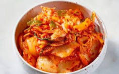

Kimchi Recipe

A bowl of kimchi
Kimchi is a traditional Korean dish made from fermented vegetables, typically including napa cabbage and Korean radishes, seasoned with chili powder, garlic, ginger, and other spices. It is known for its distinctive spicy and tangy flavor and is often served as a side dish or used as an ingredient in various Korean recipes.
ingredient
- Two heads of napa cabbage
- Sea Salt
- Fish Sauce
- Green onions
- White onion
- Garlic
- White sugar
- Ground ginger
- Gochugaru
instructions
- Prep and cut the cabbage.
- Rub with salt and seal in airtight bags, then leave at room temperature for six hours.
- Rinse with cold water, drain, and squeeze out the excess liquid.
- Place in a container with a tight fitting lid, then add the remaining ingredients.
- Seal and let sit in a cool, dry place for four days.
Home